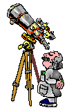

Two Feet Off The Ground


 THE HUBBLE SPACE TELESCOPE
THE HUBBLE SPACE TELESCOPE
It has been nearly three decades since the Hubble Space Telescope was first launched into orbit and this remarkable instrument continues to provide astronomers with groundbreaking observations of the universe. Althought the Hubble has undergone several servicing missions to repair and upgrade its capabilities, it is still operating today usingits original scientific instruments. As the Hubble approaches the end of its lifespan, plans are being made for its successor, the James Webb Space Telescope, which is scheduled to launch in 2018.
The Hubble Space Telescope was named after American astronomer Edwin Hubble who, in the 1920s, discovered that galaxies are not distributed uniformly throughout the universe but are instead clustered together in clumps. This discovery, along with the measurement of the expansion rate of the universe, led to the development of the big bang theory.
The Hubble Space Telescope was launched on April 24, 1990, aboard the Space Shuttle Discovery. It was deployed into orbit about 600 kilometers (370 miles) above Earth, where it would have a clear view of the universe without the interference of Earth’s atmospheric conditions.
TheHubble’s primary scientific instrument is a 2.4-meter (7.9-foot) reflecting telescope. It also has a suite of other scientific instruments that are used to study a wide variety of astronomical phenomena, from nearby planets to the most distant galaxies. The telescope is 13.3 meters (43.5 feet) long and 4.2 meters (14 feet) in diameter. The telescope's optics are so good that it can resolve objects that are 0.05 arcseconds in size. That is equivalent to being able to see a golf ball on the Moon!
Since its launch, the Hubble has made more than 1.3 million observations of over 38,000 astronomical objects. Its observations have led to the discovery of dark energy, the validation of the existence of black holes, and the development of a more precise value for the age of the universe.
In 1993, the Hubble was used to observe the impact of Comet Shoemaker-Levy 9 as it collided with Jupiter. This was the first direct observation of an astronomical event of this type and provided valuable information about comets and planetary formation.
In 1994, the Hubble made headlines again when it captured the now-famous “Pillars of Creation” photo of star formation in the Eagle Nebula. This image has been used countless times in books, movies, and television shows, and has become one of the most iconic images of the Hubble Space Telescope.
Although the Hubble was designed to operate for 15 years, it has far exceeded this lifespan and is still going strong. It has been serviced by astronauts five times, most recently in 2009, to extend its operational life.
The Hubble Space Telescope has changed the way we view the universe. Its high-resolution images have allowed us to discover new details about the structures of galaxies, the formation of stars, and the existence of planets around other stars. The telescope has also helped us to better understand the nature of dark energy, which is thought to be responsible for the accelerated expansion of the universe.
The Hubble Space Telescope is an amazing scientific instrument, and its contributions to our understanding of the universe are immeasurable.
On October 31, 2023, a mission will launch to repair and upgrade the iconic Hubble Space Telescope. The mission, called Servicing Mission 4 (SM4), will be the final mission to service Hubble. During the 11-day mission, astronauts will install new scientific instruments, replace aging parts, and perform much-needed repairs on the aging telescope.
This will be the fourth and final servicing mission to Hubble. Previous servicing missions occurred in 1993, 1997, and 2009. The mission is expected to extend the life of Hubble by at least five years. After the mission, Hubble will continue to provide stunning images and invaluable data to astronomers for years to come.
As an engineer on the next Hubble Space Telescope repair mission, I am responsible for making sure that the repairs go smoothly and that the telescope is in good working order when we finish.
To prepare for the repair mission, I have been reviewing the engineering drawings and specifications for the telescope. I have also been testing the tools and equipment that we will be using during the repair mission.
In addition to my engineering duties, I am also responsible for the safety of the crew. I have been working with the other members of the crew to develop a safety plan for the repair mission.
We are all looking forward to the repair mission and we are confident that we can successfully repair the Hubble Space Telescope.
